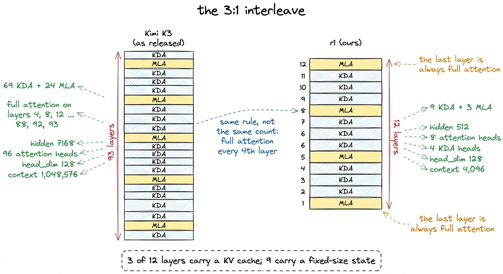
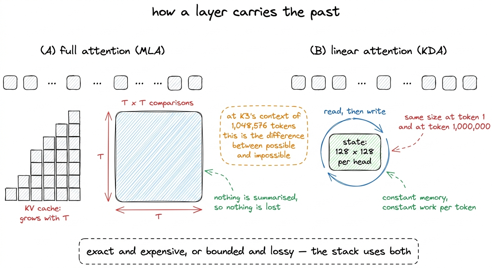
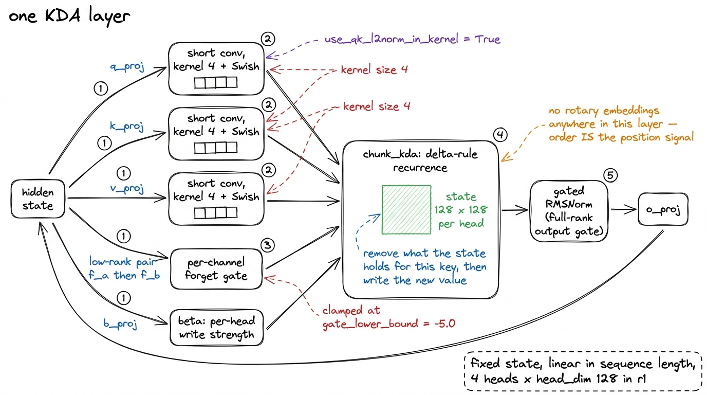
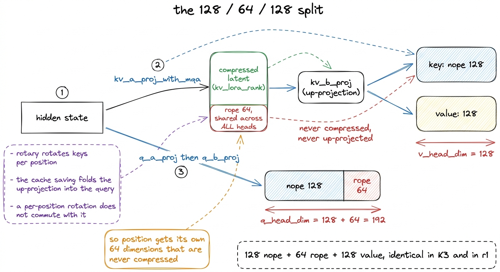
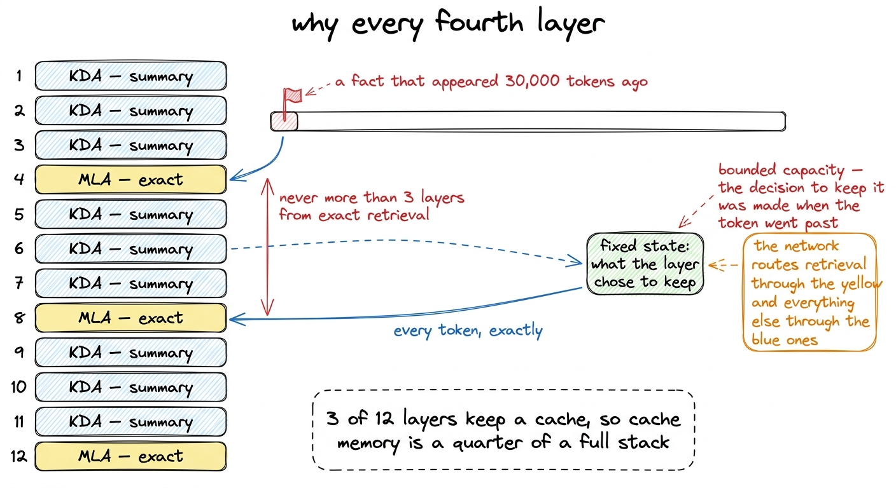
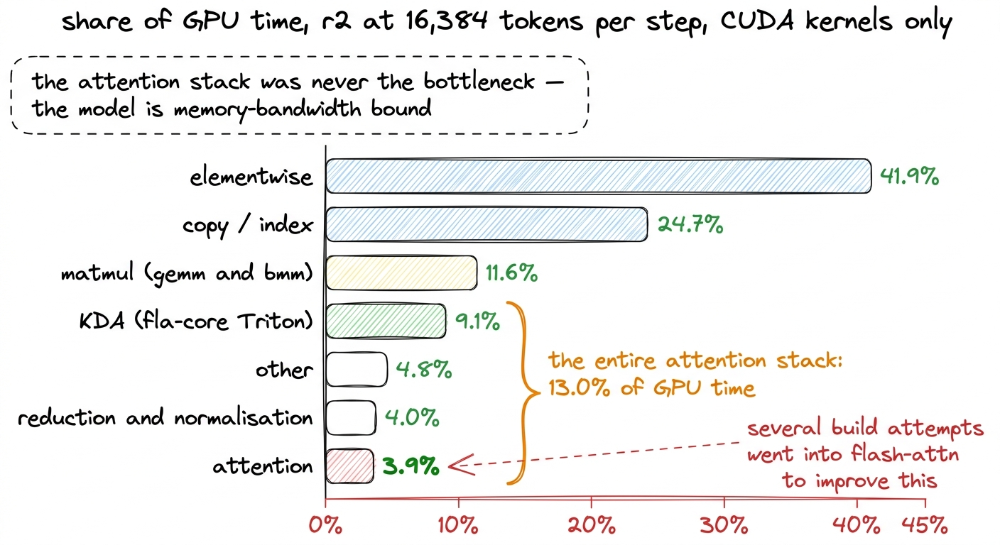

The attention stack: nine KDA layers and three MLA
The delta rule with a per-channel forget gate, multi-head latent attention at a 128/64/128 split, and why exactly every fourth layer keeps exact global retrieval.
r1 has twelve layers, and only three of them compute attention in the sense the word usually carries. Layers 4, 8 and 12 run multi-head latent attention, where every token can look at every earlier token and the model keeps a key-value cache that grows with the sequence. The other nine run Kimi Delta Attention, which keeps no cache at all and instead carries a fixed-size state that each token reads from and writes to as it passes.
That 3:1 ratio is not ours. K3 as released has 93 layers, 69 of them KDA and 24 of them full attention, with the full-attention layers placed on every fourth index: [4, 8, 12, ... 88, 92, 93]. We kept the rule rather than the count, so at twelve layers the same rule puts full attention on 4, 8 and 12 and leaves nine KDA layers around them.
This chapter is about what each mechanism costs and what it buys. The from-scratch construction of both modules, with runnable code for the recurrence and the latent projections, is a different book in this library.1 Build Kimi K3 from Scratch, which builds Kimi Delta Attention, Gated MLA, Attention Residuals and LatentMoE as small modules you can run on a laptop. Here we assume they exist and ask what they cost to train. Here we care about the two questions a training run makes you answer: how much memory does the past occupy, and how much of the GPU's time does this part of the model consume.

figure rendering · The layer stack in K3 and in r1. We kept the placement rule and scaledTwo ways to carry the past
Every autoregressive layer has to give the current token access to the tokens before it, and there are two structurally different ways to arrange that.
Full attention stores them. Each earlier token contributes a key and a value, both are kept, and the current query is compared against every key. Nothing is lost, because nothing is summarised. The cost is that the stored keys and values grow linearly with the sequence, and the comparison grows quadratically with it.
Linear attention summarises them. The layer carries a state matrix, each token updates it, and each token reads from it. The state has a fixed size that does not depend on how many tokens have gone past, so memory is constant and the per-token work is constant. What is lost is exactness: a fixed-size summary of an unbounded history is lossy by construction.
For a 4,096-token context, which is what r1 trained at, the difference is a memory line item. For K3's max_position_embeddings of 1,048,576, it decides whether the model exists. A million-token sequence in a full-attention layer stores a million keys and a million values, and the score matrix it implies has a million rows and a million columns. Nine layers out of every twelve avoiding that is the reason a 1M context is affordable at all.

figure rendering · The two ways of giving a token access to its history. K3 uses one forKDA: a recurrence with a forget gate
Kimi Delta Attention is a linear-attention recurrence built on the delta rule. The name describes the update: rather than only accumulating new key-value products into the state, the layer first removes what the state currently associates with the incoming key, then writes the new association in its place. An accumulate-only linear attention overwrites nothing, so repeated or contradictory information piles up and the state saturates. Writing a difference keeps the state usable for longer.
Around that core the module adds four things, all of which r1 inherits from K3's configuration unchanged.
A per-channel forget gate. Each channel of the state gets its own decay factor, produced from the hidden state by a low-rank pair of projections. A single scalar decay per head would force every channel to forget at the same rate, which is the wrong constraint when some channels carry a syntactic fact that expires within a clause and others carry a topic that persists for a page. The gate is clamped below by gate_lower_bound of -5.0, which bounds how fast any channel is allowed to be wiped, and prevents a single token from erasing the state.
A short convolution of kernel size 4. Queries, keys and values each pass through a depthwise convolution over a four-token window with a Swish activation before entering the recurrence. This is the same trick Mamba-style models use, and it gives each position a small amount of local mixing that a purely recurrent update is slow to build.
L2 normalisation on queries and keys. Both are normalised to unit length before the recurrence, inside the kernel. This bounds the magnitude of what any single token can write into the state, which is what keeps the recurrence numerically stable over thousands of steps of accumulation in bf16.
No explicit positional encoding. There are no rotary embeddings in a KDA layer, and none are needed. Position is carried by the recurrence itself, because the state at token t is a function of exactly the tokens before t in order, and by the four-token convolution window, which is position-sensitive by construction.
The call into the kernel makes the shape of it visible:
o, recurrent_state = chunk_kda(
q=q, k=k, v=v, # after short conv + Swish
g=g, # per-channel forget gate
beta=beta, # per-head write strength
A_log=self.A_log, dt_bias=self.dt_bias,
use_qk_l2norm_in_kernel=True,
use_gate_in_kernel=True,
use_beta_sigmoid_in_kernel=True,
safe_gate=self.gate_lower_bound is not None,
lower_bound=self.gate_lower_bound, # -5.0
)chunk_kda is the training path. It processes the sequence in chunks so the recurrence can be expressed as a sequence of matrix multiplications rather than a token-by-token loop, which is what makes a recurrent layer trainable at 4,096 tokens on a GPU at all. The single-token path, fused_recurrent_kda, is only used at inference with a cache.
Two of those arguments carry a story from elsewhere in this book. dt_bias is created with torch.empty in the released code and never initialised, and _init_weights covers only nn.Linear and nn.Embedding, so it reaches the kernel as uninitialised memory. That failed non-deterministically: rung r2 trained normally while r1 returned NaN from step 0, from the same bug.2 Fixed in train/init_patch.py with a Mamba-style dt_bias initialisation and an assert_initialised finite check that runs before step 0. The chapter on the four blockers in the released code covers all of them.

figure rendering · The KDA data path. Everything left of the recurrence prepares what getMLA: compressing the cache, and the dimension that will not compress
Multi-head latent attention attacks the other side of the trade. It keeps exact attention and shrinks what has to be stored, by projecting the hidden state down to a small latent vector and caching that instead of full keys and values. Keys and values are reconstructed from the latent by an up-projection when they are needed.
K3's split is qk_nope_head_dim 128, qk_rope_head_dim 64, v_head_dim 128, with kv_lora_rank 512 and q_lora_rank 1536. r1 uses the same 128 / 64 / 128 split, unchanged, and scales only the two low-rank widths with the hidden size.
The 64-dimensional middle term is where the design gets interesting, and it exists because compressed latents and rotary position embeddings are in direct conflict.
Rotary embeddings apply a position-dependent rotation to queries and keys before the dot product. The saving that makes latent attention worth doing comes from folding the key up-projection into the query side, so the cached latent never has to be expanded during decoding. That folding is a matrix identity, and it only holds if nothing position-dependent sits between the latent and the query. A rotation applied per position sits exactly there, and it does not commute with the up-projection, so applying rotary to a reconstructed key destroys the identity and the cache saving with it.
The resolution is to split the head. 128 dimensions carry no position at all and are reconstructed from the compressed latent, which is the "nope" part of the name. 64 dimensions are computed directly from the hidden state, never compressed, and are the only place position lives. Those 64 dimensions are produced once and shared across all heads rather than per head, so the incompressible part of the cache stays small. Values get their own 128 dimensions, also reconstructed from the latent.

figure rendering · Latent attention splits the head so that the compressible part and theThe asymmetry at the bottom of that figure matters for a reason that has nothing to do with modelling. A query head is 192 wide and a value head is 128 wide, and every fast attention kernel we could use assumes they are equal. The fix in the released code is to pad the value to 192 with zeros and slice the output back to 128, which is exact rather than approximate. It is also written to run on one code path only, which produced the first of two practical notes at the end of this chapter.
Why keep any full attention
If the state view is cheaper in memory and linear in sequence length, the question is why the stack keeps twenty-four full-attention layers out of ninety-three rather than zero.
A fixed-size state is a summary, and a summary cannot support exact retrieval of an arbitrary earlier token. Asked to copy a specific string that appeared 30,000 tokens ago, or to return a value from a table halfway up a long document, a stack made only of recurrences has to have already decided, at the moment that token went past, that it was worth keeping. The delta rule improves the odds considerably over accumulate-only linear attention, because editing the state is far better than filling it. It does not change the fact that the state has a bounded capacity and the history does not.
A full-attention layer has the opposite property. It has no capacity limit on what it can retrieve, because it kept everything, and it pays for that at every token.
Interleaving them lets the network choose. Information that needs exact recall can be routed through the layers that kept everything, while the bulk of the sequence modelling happens in layers that cost a constant amount per token. Placing full attention on every fourth index rather than, say, the last three layers, means no long stretch of the network is ever more than three layers from exact global access.
The cost accounting is the part worth carrying away. In r1, three layers out of twelve maintain a KV cache, so cache memory is a quarter of what a full-attention stack of the same shape would need. In K3, 24 of 93 layers do, which is just over a quarter, and at a context of 1,048,576 tokens that quarter is the difference between a model that ships and one that does not.

figure rendering · What each layer type can reach, and why the exact layers are spread evWhat r1 keeps, and what it scales
Held identical to K3, at any width:
| K3 | r1 | |
|---|---|---|
| full attention placement | every 4th layer | every 4th layer |
head_dim | 128 | 128 |
| MLA split (nope / rope / value) | 128 / 64 / 128 | 128 / 64 / 128 |
short_conv_kernel_size | 4 | 4 |
gate_lower_bound | -5.0 | -5.0 |
use_full_rank_gate | set | set |
Scaled with width:
| K3 | r1 | |
|---|---|---|
| layers | 93 | 12 |
| KDA / MLA layers | 69 / 24 | 9 / 3 |
hidden_size | 7,168 | 512 |
| attention heads | 96 | 8 |
| KDA heads | — | 4 |
| context | 1,048,576 | 4,096 |
The head counts are the only part of the attention stack that moves with scale, and they move because head width is held at 128 while hidden size shrinks by a factor of fourteen. At r1's hidden size of 512, four KDA heads at 128 wide is exactly the hidden dimension, and eight attention heads at 128 is twice it. Keeping head_dim fixed rather than fixed head count is what preserves the per-head arithmetic that the delta rule and the latent split were designed around.3 This choice is also what makes KDA the largest single item in the always-on parameter budget at flagship scale: 340.3M of the 834M floor. The chapter on scaling down works through that budget.
Two practical notes
The MLA layers did not run on flash-attention. The released modeling code hard-forces the string flash_attention_2 as its attention implementation, and the 192-against-128 padding described above only runs on that branch. Our MLA layers therefore run an sdpa shim registered under the flash_attention_2 key. Numerically it is identical, because the padding is zeros and the output is sliced back. It is slower. Every MFU number in this book that involves MLA was measured on that shim, which means every one of them understates what flash-attention would have given. In r1 the exposure is bounded by the interleave, since only 3 of 12 layers are MLA at all.4 An MFU figure is only comparable to another MFU figure measured on the same backend, on the same hardware, at the same batch shape. The chapter on what MFU is spends its length on exactly this, and the fitting error in attempt 13, where an H200 result and a B200 result were fitted together, is the cautionary case.
The profile retired flash-attention as a lever anyway. The MFU investigation ran sixteen numbered attempts, almost all of them on r2, the 307M-active rung above ours, on one H200. Attempt 6 was the hypothesis that the KDA or attention kernels were the cost. It was rejected by measurement, and the corrected profile, taken on r2 at 16,384 tokens per step and counting CUDA kernels only, put the two rows at:
| area | share of GPU time |
|---|---|
| KDA (fla-core Triton) | 9.1% |
| attention | 3.9% |
Against elementwise at 41.9% and copy and index at 24.7%. A good deal of build effort had gone into installing flash-attn before that profile existed, and the largest prize available for all of it was some fraction of 3.9%.5 The first version of that profile table read 4.6% for KDA and 5.1% for attention, and also carried an unexplained 30.2% "other". It summed PyTorch operator rows together with the CUDA kernels those operators launch, which double-counts. The corrected numbers are the ones above. Both versions say the same thing about flash-attn.

figure rendering · The corrected profile. The two rows this chapter is about sit near theWhat this chapter buys the rest of the book
Two things carry forward.
The first is a way of reading any hybrid attention stack. Ask what each layer type does with the past, then count how many layers of each kind there are, and the memory behaviour of the whole model falls out. Nine layers with a fixed state and three with a growing cache is a model whose long-context memory is dominated by three layers, and that is a design decision rather than an accident of implementation.
The second is a caution that the rest of the book keeps returning to. Attention is the part of a transformer that most engineering attention has been spent on, and it is the part most people reach for first when a run is slow. On this architecture, at this scale, the whole attention stack accounted for 13.0% of GPU time in the r2 profile, and the fastest available kernel for a quarter of the layers was not installed. Neither fact cost the run anything measurable, because the time was going somewhere else entirely. Finding out where took one profiling run, and that run is the next section of this book.